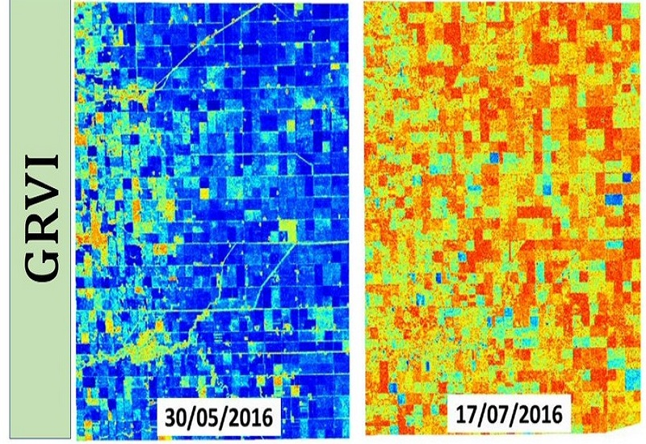

Dr. Avik Bhattacharya
Associate Professor
Centre of Studies in Resources Engineering (CSRE)
Indian Institute of Technology Bombay
Powai, Mumbai - 400 076, India
Phone (O) : (+91)-22-2576-7677
E-mail : avikb@csre.iitb.ac.in
Website : www.mrslab.in
Education
- Ph.D. (2007): Jointly at the Department of Traitement et Interprétation des Images (Image Processing and Understanding), Télécom Paris-Tech, Paris, France and INRIA, ARIANA Project Group, Sophia Antipolis, France. (Thesis funded by: CNES, Centre National d'Etudes Spatiales (The French Space Agency))
- Integrated M.Sc. (2000): Department of Mathematics, Indian Institute of Technology, Kharagpur, India.
Experience
- Associate Professor (2015 - Present): Centre of Studies in Resources Engineering (CSRE), Indian Institute of Technology Bombay, India.
- Assistant Professor (2011 - 2015): Centre of Studies in Resources Engineering (CSRE), Indian Institute of Technology Bombay, India.
- Postdoctoral Research Fellow (2008 - 2011): Canada Centre for Remote Sensing, Natural Resources Canada, Ottawa, Canada.
- Research Assistant (2004) : Blue - Order, tecmath AG, Kaiserslautern, Germany.
- Research Assistant (2001 - 2004) : Fraunhofer Institute, ITWM, Kaiserslautern, Germany.
- Radar Polarimetry
- Supervised and Unsupervised Polarimetric SAR Image Classification
- Change Detection
- Polarimetric SAR Interferometry
- Statistical Methods for SAR Image Analysis
- Applications of Radar Remote Sensing in Agriculture, Cryosphere, Urban and Planetary studies
- Title: Chandrayaan-2: Lunar Regolith Characterization using Dual-Frequency Full-Polarimetric SAR (DFSAR) Data.
Financial Support: Space Application Centre (SAC), Indian Space Research Organization (ISRO).
Year: 2019-2022.
Responsibility: Principal Investigator (PI). - Title: Analysis of Optical and Radar Remote Sensing Images for Dynamic Earth Process Monitoring.
Financial Support: Department of Science and Technology (DST), Government of India and Trento Program for Advanced Research, Italy (ITPAR- Phase IV).
Year: 2019-2021.
Responsibility: Principal Investigator (PI). - Title: AWS4AgriSAR: Crop Inventory Mapping from SAR Data on Cloud Computing Platform.
Financial Support: GEO-Amazon Earth Observation Cloud Credits Programme.
Year: 2019-2022.
Responsibility: Principal Investigator (PI). - Title: Synthetic Aperture Radar (SAR) Data Analysis for Earth Observation (EO) Applications.
Financial Support: ISRO-IIT(B) Space Technology Cell, IIT Bombay (Indian Space Research Organisation).
Year: 2017-2019.
Responsibility: Principal Investigator (PI). - Title: Development of Bistatic Radar Remote Sensing Techniques for Snow Water Equivalent (SWE) Retrieval.
Financial Support: Department of Science and Technology (DST), Government of India.
Year: 2015-2018.
Responsibility: Co-Principal Investigator (Co-PI). - Snow Ice Structure Retrieval from PolSAR Data. Data Support: TerraSAR-X from German Space Agency (DLR). Year: 2015-2016. Responsibility: Principal Investigator (PI).
- Glacier Mapping And Velocity Estimation Using Satellite Images. Financial Support: Department of Science and Technology (DST), Government of India. Year: 2014-2017. Responsibility: Principal Investigator (PI).
- Snowpack Parameter Estimation and Glacier Movement Studies using SAR Data. Data Support: ALOS PALSAR/PALSAR-2 Data from Japan Aerospace Exploration Agency (JAXA). Year: 2013- Responsibility: Principal Investigator (PI).
- Monitoring Snow and Glaciers of Himalayan Region -Phase II. Financial Support: Space Application Centre (SAC), Indian Space Research Organization (ISRO). Year: 2011-2015. Responsibility: Principal Investigator (PI).
- Snowpack Characterization and Glacier Studies using SAR Polarimetry Time Series Data. Data Support: Radarsat-2 Data under the Science and Operational Applications Research (SOAR) Program, Canadian Space Agency (CSA). Year: 2013- Responsibility: Principal Investigator (PI).
- Advanced Methods For The Analysis of Optical And Radar Remote Sensing Images Acquired By Last Generation Satellite Systems. Financial Support: Department of Science and Technology (DST), Government of India and Trento Program for Advanced Research, Italy (ITPAR- Phase III). Year: 2013-2016. Responsibility: Principal Investigator (PI).
- Development of Methodologies For Snowpack Characterization Using SAR Polarimetry And Interferometry. Financial Support: Department of Science and Technology (DST), Government of India - Japan Society for the Promotion of Science (JSPS). Year: 2013-2015. Responsibility: Principal Investigator (PI).
- Microwave Remote Sensing and SAR Tutor With Virtual Laboratory. Financial Support: Indian Space Research Organization (ISRO)- IIT(B) Space Technology Cell. Year: 2012-2014. Responsibility: Co-Principal Investigator (Co-PI).
- Chandrayaan-1 Mini-SAR Data Analysis For Lunar Polar Region. Financial Support: Space Application Center (SAC), Indian Space Research Organization (ISRO). Year: 2012-2014. Responsibility: Co-Principal Investigator (Co-PI).
- Combining Passive and Active Microwave Observations for Improving Snow Parameters Estimation over Himalaya. Year: 2012-2014. Responsibility: Co-Principal Investigator (Co-PI).
- Development of Methodology For Snow Pack Characterization And Glacier Movement Studies Using Multi-frequency SAR Time Series Satellite Data. Financial Support: Department of Science and Technology (DST), Government of India. Year: 2011-2014. Responsibility: Co-Principal Investigator (Co-PI).
- Agriculture and AgriFood Canada (AAFC), Ottawa, Canada
- University of Alicante, Spain
- Institut für Geographie, Friedrich-Alexander-Universität, Erlangen-Nürnberg, Erlangen, Germany.
- University of Trento, Italy (Under India - Trento Programme for Advanced Research - ITPAR).
- Laboratory for Imaging the Mining Environment (LIME) & Interdisciplinary Environmental Studies (IES), University of New South Wales (UNSW), Australia.
- CSA - Canadian Space Agency.
- JAXA - Japan Aerospace Exploration Agency.
- DLR - The German Aerospace Center.
- The University of Tokyo (Under India - Japan Cooperative Science Programme - IJCSP).
- Niigata University, Niigata, Japan.
- SAC - Space Application Centre, Ahmedabad, India.
- SASE - Snow and Avalanche Study Establishment, DRDO, Chandigarh, India.
Teaching
UG Course (Minor)
- GNR401: Remote Sensing And Image Processing.
- GNR647: Microwave Remote Sensing.
- GNR603: Remote Sensing.
- GNR618: Remote Sensing and GIS Application to Cryosphere.
- GNR653: Data Analysis Methods for Geo-Spatial Applications.
- GNR805: Advanced Concepts in Polarimetric SAR Image Analysis.
- GNR792: Communications Skills.
Academic Supervision
PhD Thesis - Ongoing
- Narayana Rao Bhogavarapu (2019 – ): Soil Moisture Retrieval Using SAR Data (CoSupervisor).
- Subhadip Dey (2018 - ): Crop Mapping and Monitoring Using SAR Data.
- Ushashi Chaudhury (2018 - ): Advanced Machine Learning Techniques for Remote Sensing Image Retrieval.
- Dikshya Ratha (2017 - ): PolSAR Image Analysis Using Kernel Methods
- Dipankar Mandal (2017 - ): Crop Biophysical Parameter Retrieval using Polarimetric SAR Data (Co-supervisor)
- Debanshu Ratha (2017 - ): Mathematical Methods in PolSAR Data Analysis
- Gaurav Dashondi (2016 - ): Sea objects detection and classification using remote sensing images (Co-supervisor)
- Akshay Patil (2016 - ): Monitoring Snow Water Equivalent in the Indian Himalayas. (Co-supervisor)
PhD Thesis - Completed
- Siddharth H. Kalpagam (2011 - 2018): Random Forest Based Feature Selection and Classification for Earth Observation Applications.
- Shaunak De (2014 - 2018): Development of Auto-Encoder Based Methods for Synthetic Aperture Radar Image Analysis.
- Arnab Muhuri (2013 - 2018): Algorithms for Remote Earth Observation of Snow Cover by Satellite SAR Images (Awarded the IIT Bombay Excellence in Ph.D. Thesis Award; Awarded the Alexander von Humboldt Post-doctoral Research Fellowship, 2018).
- Surendar Manickam (2012 - 2016): Snowpack Characterization Using PolSAR Techniques (Defended April 2016; Awarded the IIT Bombay Excellence in Ph.D. Thesis Award. Currently, pursuing Alexander von Humboldt postdoctoral research at Friedrich-Alexander-Universität Erlangen-Nürnberg, Germany.)
- Gyaneshwar Patle (2018 – 2020): Processing Chain for Soil Moisture Retrieving Using Time-Series Sentinel – 1 SAR Data.
- Moni Shankar Dey (2018 – 2020): Deep Morphological Neural Network for Road Detection from Satellite images.
- Parmita Ghosh (2017-2019)–(IIT Bombay-TU Darmstadt DAAD Programme): Evaluation of Crop Monitoring Potential of Sentinel-2.
- Janardan Roy (2017-2019): Fusion of Sentinel-1 and Sentinel-2 Time Series Images for Agriculture Crop Mapping in Google Earth Engine.
- Aasheesh Tiwari (2017-2019): Recurrent Neural Network Based Approach to Vegetation Cover Classification from SAR Images.
- Rahul Kumar (2016-2018): Ship Detection in SAR Imagery Using Convolution Neural Networks.
- Sambuddha Saha (2015 -2017 ): SAR Image Classification Using Deep Learning Algorithm.
- Anjaly Vashistha (2015 -2017 ): Snow Grain Size Measurement Using Dense Media Radiative Transfer Model.
- Asmeet Ahluwalia (2014 - 2016): Urban Area Mapping Using Random Forest Technique from PolSAR data.
- Khusboo Parakh (2014 - 2016): Application of Random forest and other machine learning algorithms for geological mapping from remotely sensed hyperspectral, multispectral and elevation data.
- Debaditya Acharya (2013 - 2015): Geological Structural Mapping Using SAR Imagery.
- Mohini Kargaonkar (2013 - 2015): Hierarchical Classification for SAR Images.
- Kratika Yadav (2013 - 2015): Ship Detection using SAR Data.
- Shilpa Phukan (2012 - 2014): Understanding the Microstructure and Metamorphism Evaluation of Snow.
- Swinky Dhingra (2011 - 2013): Chandrayaan-1 Mini-SAR Data Analysis for Water-Ice Detection at Lunar Poles.
- Arnab Muhuri (2010 - 2012): Statistical Modeling of Multi-Band Polarimetric Synthetic Aperture Radar Image.
Ph.D. Thesis - Internal Examiner
- Shweta Sharma (2020): Land Deformation Mapping using Differential and Persistent Scatterer Interferometry Synthetic Aperture Radar (DInSAR & PSInSAR) Techniques.
- Bijal Chudasama (2019): Calcrete Uranium Systems in Western Australia and Namibia: Genetic Modelling, Prospectivity Analyses and Estimations of Undiscovered Endowment.
- Ranjan Sarkar (2019): Geology of the Light-Toned Layered Rock Units in Juventae Chasma, Mars.
- Ansari Rizwan Ahmed Mohammed Nafees (2017): Multiresolution Analysis Based Noise Filtering and Textural Segmentation of Remotely Sensed Satellite Images.
- G. G. Ponnurangam (2016): Retrieval of Soil Moisture using Polarimetric SAR Remote Sensing.
- S. S. Shithole (2015): Processing and analysis of Synthetic Aperture Radar Images for Speckle Reduction.
- SAR Image Analysis: Physics in Deep Learning and Its Applications, TEQIP-III Workshop, Indian Institute of Information Technology Guwahati (IIITG), Guwahati, India, 7–8 March, 2020.
- A Unified Framework for Analysis of Polarimetric SAR Data,URSI–Regional Conference on Radio Science (URSI-RCRS), IIT (BHU), Varanasi,India, 12–14 February, 2020.
- Radar Remote Sensing: Perspectives & Applications, IEEE GRSS One-day International Workshop on Synthetic Aperture Radar, Discipline of Astronomy, Astrophysics and Space Engineering, Indian Institute of Technology Indore, 11 December, 2019.
- Radar Remote Sensing: Applications for Earth Observation, Keynote: 3rd International Conference in Communication, Devices and Networking, (ICCDN 2019), Department of Electronics and Communication Engineering, Sikkim Manipal Institute of Technology (SMIT), Sikkim, 9–10, December, 2019.
- SAR for Agriculture: Towards an Operational Application in India, Keynote: 6th Asia-Pacific Conference on Synthetic Aperture Radar (APSAR), Xiamen, China, 26–29, November, 2019.
- An Unified Framework for Analysis of Polarimetric SAR Data, University of Electronic Science and Technology of China (UESTC), Chengdu, China, 25 November, 2019.
- Polarimetric SAR Image Analysis: Physics in Machine Learning, IEEE GRSS Chapnet Program: International Workshop on Advanced Machine Learning Techniques for Climate Informatics, Center for Soft Computing, Indian Statistical Institute (ISI), Kolkata, 4–6, November, 2019.
- Introduction to Synthetic Aperture Radar (SAR), IEEE GRSS Chapnet Program: International Workshop on Advanced Machine Learning Techniques for Climate Informatics, Center for Soft Computing, Indian Statistical Institute (ISI), Kolkata, 4–6, November, 2019.
- Radar Remote Sensing: Perspectives and Applications, IEEE Geoscience and Remote Sensing Conference, Recent Advances in Geoscience and Remote Sensing (TENGARSS), Kochi, India, 17–20 October, 2019.
- Radar Remote Sensing: Applications for Earth Observation, Indian Institute of Space Science and Technology (IIST), Thiruvananthapuram, India, 16 October, 2019.
- A Novel Approach for PolSAR Data Analysis, India-Trento Program for Advanced Research (ITPAR Phase – IV), University of Trento, Trento, Italy, September, 2019.
- A Simple and Efficient Approach for PolSAR Data Analysis International Polarimetric SAR Workshop, Tokyo, Japan, 3–4 August, 2019.
- A New Paradigm for Polarimetric SAR Data Analysis LISTIC – Polytech Annecy-Chambéry, Université Savoie Mont Blanc, France, 23 May, 2019.
- Remote Sensing: Principles and Perspectives STTP on Machine Learning Applications for Spatio-Temporal Data Analytics, DBIT, Mumbai, 7–11 January, 2019.
- Radar Remote Sensing: Perspectives and Applications Advances in Science, Engineering and Technology (ASET) Colloquium, Tata Institute of Fundamental Research (TIFR), Mumbai, 28 December, 2018.
- Polarimetric SAR Image Analysis: Physics to Machine Learning, Summer School on Computational Intelligence: Theory, Implementations & Applications, IEEE Computational Intelligence Society (CIS) and IEEE Geoscience and Remote Sensing Society (GRSS), Hyderabad, 22–27 November, 2018.
- Introduction to Synthetic Aperture Radar (SAR), IEEE GRSS Chapnet Program: International School on Deep Learning in SAR and Hyperspectral Remote Sensing (DL-SHyRS), Center for Soft Computing, Indian Statistical Institute (ISI), Kolkata, October 29–November 2, 2018.
- Concepts in Polarimetric SAR Image Analysis, IEEE GRSS Chapnet Program: International School on Deep Learning in SAR and Hyperspectral Remote Sensing (DL-SHyRS), Center for Soft Computing, Indian Statistical Institute (ISI), Kolkata, October 29–November 2, 2018.
- Advanced Concepts in Polarimetric SAR Image Analysis, 3rd Remote Sensing Spring School, Instituto Gulich, Argentina National Space Activities Commission (CONAE), Córdoba, Argentina, 10–21, September, 2018.
- Geometrical Methods in Polarimetric SAR Image Analysis, 3rd Remote Sensing Spring School, Instituto Gulich, Argentina National Space Activities Commission (CONAE), Córdoba, Argentina, 10–21, September, 2018.
- PolSAR Data Analysis for Target Characterization, Workshop on Remotely Sensed Big Data Analysis and Mining (RSBDAM’18): IEEE GRSS-Chapnet Programme, Indian Statistical Institute (ISI) Kolkata, 23–24 January, 2018.
- Remote Sensing: Principles and Perspectives, Second National Symposium on Recent Advances & Challenges in Engineering & Management (RACEM-2017), VIT, Mumbai, 22–23 December, 2017.
- PolSAR Image Decompositions, IV JIAAIS Interdisciplinary Workshop on Advanced Signal and Image Analysis, Federal University of Alagoas, Maceió, Brazil, 10–15 November, 2017.
- Polarimetric Synthetic Aperture Radar (PolSAR) Data Analysis and Its Applications, India-Trento Program for Advanced Research (ITPAR Phase - III), Fondazione Bruno Kessler, Trento, Italy, October 2016.
- Visit: Friedrich-Alexander-Universität Erlangen-Nürnberg, Germany, October 2016.
- Recent Developments in the Microwave Remote Sensing Group (Cryosphere & Planex), India-Trento Program for Advanced Research (ITPAR Phase - III), University of Trento, Italy, August 2015.
- Orientation Angle Estimation from PolSAR Data using a Stochastic Distance, Department of Information Engineering, Niigata University, Niigata, Japan, 2014.
- Microwave Remote Sensing Lab: Research in Cryosphere and Planex, Department of Electrical Engineering and Information Systems, The University of Tokyo, Tokyo, Japan, 2014.
- SAR Remote Sensing Image Analysis: Polarimetry, Interferometry and Polarimetric SAR Interferometric Applications, Snow and Avalanche Study Establishment (SASE), Defense Research and Development Organization (DRDO), Chandigarh, India, 2011.
- Graph Representation of Road Networks in Satellite Images for Indexation Action Concertée Incitative Massés de Donnes (ACI) QuerySat Project, École Supérieuredes Communications de Tunis (Sup’Com), Tunisia, 2006.
- Features from Graph Representation of Road Networks in Satellite Images for Indexation Cross-Seminar (ARIANA/MAESTRO) research groups, INRIA, Sophia Antipolis, France, 2005.
- Features from Graph Representation of Road Networks in Satellite Images for Indexation, IMEDIA research group, INRIA Rocquencourt, France, 2005.
- Why Should I Write & Publish?, Webinar:IEEE Authorship Session, 10 May, 2020.
- IEEE GRSS Vision for Women Empowerment, IEEE GRSS “Women Empowering Women” Program, Ramrao Adik Institute of Technology (RAIT), Nerul, 8 March, 2019.
- IEEE Geoscience and Remote Sensing Society (GRSS): Present and Future in India STTP on Machine Learning Applications for Spatio-Temporal Data Analytics, DBIT, Mumbai, 7–11 January, 2019.
- IEEE Geoscience and Remote Sensing Society (GRSS): Awareness and Education Second National Symposium on Recent Advances & Challenges in Engineering & Management (RACEM), VIT Mumbai, 22–23, December, 2017.
- Exhibitor Plenary talk: IEEE Geoscience and Remote Sensing Society (GRSS) Asian Conference on Remote Sensing (ACRS), New Delhi, 2017.
- IEEE Geoscience and Remote Sensing Society (GRSS), IEEE Geoscience and Remote Sensing (GRSS) Event on “Remote Sensing and GIS in Rural Agricultural System”, Geo-informatics Research Centre, Department of Computer Engineering, Don Bosco Institute of Technology, Mumbai, 22–23 September, 2017.
- Novel Techniques for Snow Cover Mapping Using Polarimetric SAR Images Workshop: SAR & Cryosphere, LISTIC – Polytech Annecy-Chambéry, Université Savoie Mont Blanc, France, 11 June, 2019. (Link)
- Tutorial: Polarimetric SAR Image Processing and Analysis IEEE GRSS Chapnet Program: International School on Deep Learning in SAR and Hyperspectral Remote Sensing (DL-SHyRS), Center for Soft Computing, Indian Statistical Institute (ISI), Kolkata, October 29–November 2, 2018.
- Tutorial: SAR Image Processing and Analysis International Workshop on Remote Sensing Image Analysis, India-Trento (Italy) Program for Advanced Research (ITPAR), 16 April, 2016.
- Lecture: Basic and Advanced SAR Polarimetry QIP Short Term Course on Satellite Image Processing Basic to Advanced, CSRE, IIT Bombay, 24 Nov.–05 Dec., 2014
- Lecture: Basics of SAR Polarimetry QIP Short Term Course on Advanced Techniques for Satellite Image Analysis, CSRE, IIT Bombay, 10–14 Feb., 2014
- Lecture: Basics of SAR Polarimetry QIP Short Term Course on Principles and Applications of Satellite Image Processing, CSRE, IIT Bombay, 25–29 Mar., 2013
Academic Awards
- Visiting Professor: LISTIC – Polytech Annecy-Chambéry, Université Savoie Mont Blanc, France, 2019.
- IIT Bombay Excellence in Teaching Award, 2018.
- Visiting Professor: Instituto Gulich, National University of Cordoba, Argentina Space Agency (CONAE), Argentina, 2018
- Australian Government Endeavour Executive Fellowship Award, 2016.
- Best Poster Award: National Symposium on Recent Advances in Remote Sensing and GIS with Special Emphasis on Mountain Ecosystems & Annual Conventions of Indian Society of Remote Sensing & Indian Society of Geomatics, Dehradun, India,7–9, December, 2016
- Best Paper Award: Geomatrix’14, National Conference on Application of Geoinformatics in Rural, Urban & Climatic Studies, Indian Institute of Technology Bombay, 6–7, June, 2014
- Best Paper Award: Geomatrix’12, International Conference on Geospatial Technologies and Applications, Indian Institute of Technology Bombay, 26–29 February, 2012
- Best Paper Award: 8th International Conference on Microwave Antenna Propagation & Remote Sensing, Jodhpur, 10–15 December, 2012
- Young Faculty Award, Indian Institute of Technology Bombay, 2011–2014.
- Natural Sciences and Engineering Research Council of Canada (NSERC) Visiting Scientist Fellowship at the Canadian National Laboratories, 2008-2011. (Visiting Scientist at the Canadian Centre for Remote Sensing).
- PhD fellowship awarded by CNES, Centre National d'Etudes Spatiales (The French Space Agency), 2004-2007.
Professional Memberships
- Senior Member : IEEE Geoscience and Remote Sensing Society (IEEE GRSS)
- Member : Indian Society of Remote Sensing (ISRS)
- Corresponding Member: Union Internationale de Radio-Scientifique | International Union of Radio Science (URSI)
- Chairperson: IEEE Geoscience and Remote Sensing Society (GRSS), Bombay Chapter
- Joint Secretary: Indian Society of Remote Sensing (ISRS), Bombay Chapter (2014–)
Editorship
- Editor in Chief, IEEE Geoscience and Remote Sensing Letters (2019 -).
- Associate Editor, IEEE Geoscience and Remote Sensing Letters (GRSL) 2015–2018.
- Guest Editor: Special issue on Applied Earth Observations and Remote Sensing in India in IEEE Journal of Selected Topics in Applied Earth Observations and Remote Sensing (JSTARS), 2017
- Guest Editor: Special Issue on Synthetic Aperture Radar Imaging & Signal Processing in Journal of Engineering, 2017
Journal Reviewer
- Canadian Journal of Remote Sensing.
- IEEE Transactions on Geoscience and Remote Sensing (TGRS).
- IEEE Geoscience and Remote Sensing Letters (GRSL).
- IEEE Journal of Selected Topics in Applied Earth Observations and Remote Sensing (JSTARS).
- Journal of the Indian Society of Remote Sensing
- International Journal of Applied Earth Observation and Geoinformation (JAG).
- International Journal of Remote Sensing (IJRS).
- International Journal of Remote Sensing Letters (RSL).
Scientific Committee Member of the IEEE International Geoscience and Remote Sensing Symposium
- Waikoloa, Hawaii, USA, 2020.
- Yokohama, Japan, 2019.
- Valencia, Spain, 2018.
- Fort Worth, Texas, USA, 2017.
- Beijing, China, 2016.
- Milan, Italy, 2015.
- Quebec, Canada, 2014
Scientific Committee Member of the Latin American GRSS & ISPRS Remote Sensing Conference (LAGIRS), Santiago, Chile, 2020.
Synergistic Activities
- Publication Chair: IEEE International India Geoscience and Remote Sensing Symposium (InGARSS), Ahmedabad, India, 2–5, December, 2020.
- Chair: Special Track: Technologies in Applications of Remote Sensing (STARS): IEEE HYDCON – International Conference on Engineering in 4th Industrial Revolution, Telangana, India, 11–12 September, 2020.
- Member: International Program Committee, ICACC-2020, Mumbai, India, 3–4, April, 2020.
- Session Chair: SAR Applications for Land, Vegetation and Ocean: 6th Asia-Pacific Conference on Synthetic Aperture Radar (APSAR), Xiamen, China, 26–29, November,2019.
- Session Chair: Image Processing and Fusion: IEEE Geoscience and Remote Sensing Conference: Recent Advances in Geoscience and Remote Sensing (TENGARSS), Kochi, Kerala, 17–20, October, 2019.
- Publication Chair: Special Session: Recent Advances in Geoscience and Remote Sensing: Technologies, Standards and Applications, TENCON, 2019.
- Session Co-Chair: Special Session: SAR Polarimetry: Methods & Applications, Asian Conference on Remote Sensing (ACRS), 2017.
- Chairperson: IEEE Geoscience and Remote Sensing (GRSS) Event on “Remote Sensing and GIS in the Service of India’s Development”, June, 2017.
- Chairperson: International Workshop on Remote Sensing Image Analysis, India-Trento (Italy) Program for Advanced Research (ITPAR), April 2016.
- Technical Program Committee (TPC) Member: National Conference on Application of Geo-informatics in Rural, Urban and Climatic Studies (Geomatrix14), IIT Bombay, 2014.
- Technical Program Committee (TPC) Member: 8th Indian Conference on Computer Vision, Graphics and Image Processing (ICVGIP), IIT Bombay, 2012.
- Technical Program Committee (TPC) Member: International Conference on Geospatial Technologies and Applications (Geomatrix12), IIT Bombay, 2012.
- Project Evaluator: Swiss National Science Foundation (SNSF) grant application under Mathematics, Physical and Engineering Sciences Division on High Resolution Radar Imaging of Snow Avalanches, 2011.
- Associate Member: CNES-DLR-ENST Centre of Competence on Information Extraction and Image Understanding for Earth Observation, Paris, France, 2005-2008.
- Organizing Committee: Urban Remote Sensing Joint Event, URBAN/URS, Paris, France, April 2007.
- President: Mathematics Colloquium of the Department of Mathematics,IIT Kharagpur, 1999-2000.
- Editorial: Message from the Incoming Editor-in-Chief, Avik Bhattacharya, IEEE Geoscience and Remote Sensing Letters, vol. 16, no. 1, pp. 3-4, 2019. https://ieeexplore.ieee.org/document/8591983
- Special Stream: Advanced Statistical Techniques in SAR Image Processing and Analysis, Luis Gómez Déniz, Avik Bhattacharya, Juliana Gambini, Anthony Doulgeris, IEEE Geoscience and Remote Sensing Letters, 2018. http://www.grss-ieee.org/letters/special-streams/advanced_stats_sar_2018/
- Special Issue: Applied Earth Observation and Remote Sensing in India, Avik Bhattacharya, Lorenzo Bruzzone, B. S. Daya Sagar, Paul A. Rosen, IEEE Journal of Selected Topics in Applied Earth Observations and Remote Sensing, vol. 10, no. 12, pp. 5151-5154, 2017. https://ieeexplore.ieee.org/document/8119497
- Encyclopédie des Sciences; Field: Image; Subject: Remote Sensing Imagery, Subject Heads: Avik Bhattacharya and Emmanuel Trouvé, ISTE-WILEY, London, United Kingdom, https://www.istegroup.com/en/sciences/
- Dipankar Mandal, Debanshu Ratha, Avik Bhattacharya, Vineet Kumar, Heather McNairn, Y. S. Rao, Alejandro C. Frery, "A Radar Vegetation Index for Crop Monitoring Using Compact Polarimetric SAR Data", IEEE Transactions on Geoscience and Remote Sensing, 2020, (In Press)
- Dipankar Mandal, Vineet Kumar, Juan M. Lopez-Sanchez, Avik Bhattacharya, Heather McNairn, Y. S. Rao, "Crop Biophysical Parameter Retrieval from Sentinel-1 SAR Data with a Multi-target Inversion of Water Cloud Model", International Journal of Remote Sensing, vol. 41, no. 14, pp. 5503-5524, 2020.
- Subhadip Dey, Dipankar Mandal, Laura Dingle Robertson, Biplab Banerjee, Vineet Kumar, Heather McNairn, Avik Bhattacharya, Y. S. Rao, "In-Season Crop Classification Using Elements of the Kennaugh Matrix Derived from Polarimetric RADARSAT-2 SAR Data", International Journal of Applied Earth Observations and Geoinformation, vol. 88, 102059, 2020.
- Ushasi Chaudhuri, Biplab Banerjee, Avik Bhattacharya, Mihai Datcu, "CMIR-NET: A Deep Learning Based Model For Cross-Modal Retrieval", Remote Sensing Pattern Recognition Letters, vol. 131, pp. 456-462, 2020.
- Vineet Kumar, Dipankar Mandal, Avik Bhattacharya, Y. S. Rao, "Crop Characterization Using an Improved Scattering Power Decomposition Technique for Compact Polarimetric SAR Data", International Journal of Applied Earth Observations and Geoinformation, vol. 88, 102052, 2020.
- D. Mandal, V. Kumar, D. Ratha, J. M. Lopez-Sanchez, A. Bhattacharya, H. McNairn, Y. S. Rao, K. V. Ramana, "Assessment of Rice Growth Conditions in a Semi-Arid Region of India Using the Generalized Radar Vegetation Index Derived from RADARSAT-2 Polarimetric SAR Data", Remote Sensing of Environment, vol. 237, 111561, 2020.
- Debanshu Ratha, Eric Pottier, Avik Bhattacharya, Alejandro C. Frery, "A PolSAR Scattering Power Factorization Framework and Novel RollInvariant Parameters Based Unsupervised Classification Scheme Using a Geodesic Distance", IEEE Transactions on Geoscience and Remote Sensing, vol. 58, no. 5, pp. 3509-3525, 2020.
- Davide Pirrone, Shaunak De, Avik Bhattacharya, Lorenzo Bruzzone, Francesca Bovolo, "An Unsupervised Approach to Change Detection in Built-Up Areas by Multi-temporal PolSAR Images", IEEE Geoscience and Remote Sensing Letters, 2019, (In Press).
- Dipankar Mandal, Mehdi Hosseini, Heather McNairn, Vineet Kumar, Avik Bhattacharya, Y. S. Rao, Scott Mitchell, Laura Dingle Robertson, Andrew Davidson, Katarzyna Dabrowska-Zielinska. "An Investigation of Inversion Methodologies to Retrieve the Leaf Area Index of Corn from C-Band SAR Data". International Journal of Applied Earth Observations and Geoinformation, vol. 82, 101893, 2019. DOI; 10.1016/j.jag.2019.06.003
- Debanshu Ratha, Paolo Gamba, Avik Bhattacharya, Alejandro C. Frery. "Novel Techniques for Built-Up Area Extraction from Polarimetric SAR Images". IEEE Geoscience and Remote Sensing Letters, 2019, (In Press)
- Debanshu Ratha, Dipankar Mandal, Vineet Kumar, Heather McNairn, Avik Bhattacharya, Alejandro C. Frery, "A Generalized Volume Scattering Model Based Vegetation Index from Polarimetric SAR Data". IEEE Geoscience and Remote Sensing Letters, 2019, (In Press)
- D Sekhar Vaka, Y. S. Rao, Avik Bhattacharya,"Surface Displacements of the 12 November 2017 Iran – Iraq Earthquake Derived Using SAR Interferometry". Geocarto International, 2019, (In Press)
- Ushasi Chaudhuri, Biplab Banerjee, Avik Bhattacharya, "Siamese Graph Convolutional Network for Content Based Remote Sensing Image Retrieval". Computer Vision and Image Understanding, vol. 184, pp. 22-30, 2019.
- Dipankar Mandal, Vineet Kumar, Heather McNairn, Avik Bhattacharya, Y. S. Rao, "Joint Estimation of Plant Area Index (PAI) and Wet Biomass in Wheat and Soybean from C-band Polarimetric SAR Data", International Journal of Applied Earth Observations and Geoinformation, vol. 79, pp. 24-34, 2019.
- Vineet Kumar, Y. S. Rao, Avik Bhattacharya, Shane Cloude, "Classification Assessment of Real Versus Simulated Compact and Quad-Pol Modes of ALOS-2", IEEE Geoscience and Remote Sensing Letters, vol. 16, no. 9, pp. 1497-1501, 2019.
- Rizwan Ahmed Ansari, B. Krishna Mohan, Avik Bhattacharya, "Textural Segmentation of Remotely Sensed Images Using Multiresolution Techniques', Geocarto International, 2019, (In Press)
- Siddharth Hariharan, Dipankar Mandal, S. Tirodkar, Vineet Kumar, A. Bhattacharya and Juan M. Lopez-Sanchez. "A Novel Phenology Based Feature Subset Selection using Random Forest for Multi-temporal PolSAR Crop Classification". IEEE Journal of Selected Topics in Applied Earth Observations and Remote Sensing, vol. 11, no. 11, pp. 4244-4258, 2018. DOI:10.1109/JSTARS.2018.2866407
- Dipankar Mandal, Vineet Kumar, A. Bhattacharya, Y. S. Rao, Paul Siqueria, and Soumen Bera. "Sen4Rice: A Processing Chain for Differentiating Early and Late Transplanted Rice using Time-Series Sentinel-1 SAR Data with Google Earth Engine". IEEE Geosciences and Remote Sensing Letters, vol. 15, no. 12, pp. 1947-1951, 2018. DOI: 10.1109/LGRS.2018.2865816
- Arnab Muhuri, Surendar Manickam, A. Bhattacharya, Snehmani. "Snow Cover Mapping with Temporal Polarization Fraction Variation Using RADARSAT-2 C-Band Full-Polarimetric SAR Data Over the Indian Himalayas". IEEE Journal of Selected Topics in Applied Earth Observations and Remote Sensing, vol. 11, no. 7, pp. 2192-2209, 2018.
- Shaunak De, Debanshu Ratha, Dikshya Ratha, A. Bhattacharya, Subhasis Chaudhuri. "Tensorization of Multi-Frequency PolSAR Data for Classification Using an AutoEncoder Network". IEEE Geoscience and Remote Sensing Letters, vol. 15, no. 4, pp. 542-546, 2018.
- D. Ratha, A. Bhattacharya, Alejandro C. Frery, "Unsupervised Classification of PolSAR Data Using a Scattering Similarity Measure Derived from a Geodesic Distance", IEEE Geoscience and Remote Sensing Letters, vol. 15, no. 1, pp. 151-155, 2018. DOI: 10.1109/LGRS.2017.27787492017
- A. Muhuri, D. Ratha, A. Bhattacharya, "Seasonal Snow Cover Change Detection Over the Indian Himalayas Using Polarimetric SAR Images", IEEE Geoscience and Remote Sensing Letters, 2017. DOI: 10.1109/LGRS.2017.2764123
- V. Kumar, H. McNairn, A. Bhattacharya, Y. S. Rao, "Temporal Response of Scattering from Crops for Transmitted Ellipticity Variation in Simulated Compact-Pol SAR Data", IEEE Journal of Selected Topics in Applied Earth Observations and Remote Sensing, 2017. DOI: 10.1109/JSTARS.2017.2757041
- S. De, L. Bruzzone, A. Bhattacharya, F. Bovolo, S. Chaudhuri, "A Novel Techinque Based on Deep Learning and a Synthetic Target Database for Classification of Urban Areas in PolSAR Data", IEEE Journal of Selected Topics in Applied Earth Observations and Remote Sensing, 2017. DOI: 10.1109/JSTARS.2017.2752282
- D. Ratha, S. De, T. Celik, A. Bhattacharya, "Change Detection in Polarimetric SAR Images Using a Geodesic Distance Between Scattering Mechanisms", IEEE Geoscience and Remote Sensing Letters, vol. 14, no. 7, pp. 1066-1070, 2017.
- S. Hariharan, S. Tirodkar, A. Porwal, A. Bhattacharya, A. Joly "Random Forest based Prospectivity Modeling of Greenfield Terrains using Sparse Deposit data: An example from the Tanami region, Western Australia", Natural Resources Research vol. 26, no. 4, pp. 489-507, 2017.
- A. Muhuri, M. Surendar, A. Bhattacharya, "Scattering Mechanism Based Snow Cover Mapping Using RADARSAT-2 C-Band Polarimetric SAR Data", IEEE Journal of Selected Topics in Applied Earth Observations and Remote Sensing, vol. 10, no. 7, pp. 3213-3224, 2017.
- D. Ratha, M. Surendar, A. Bhattacharya, "Improvement of PolSAR Decomposition Scattering Powers Using a Relative Decorrelation Measure", Remote Sensing Letters 8.4 (2017): 340-349.
- M. Surendar, A. Bhattacharya, G.Singh, Y.Yamaguchi, "Estimation of Snow Surface Dielectric Constant from Polarimetric SAR Data", IEEE Journal of Selected Topics in Applied Earth Observations and Remote Sensing 10.1 (2017): 211-218.
- N. Usami, A. Muhuri, A. Bhattacharya, A. Hirose, "PolSAR Wet Snow Mapping with Incident Angle Information", IEEE Geoscience and Remote Sensing Letters 13.12 (2016): 2029-2033.
- A. Bhattacharya, M. Surendar, "Enhanced Target Characterization and Improved Scattering Power Decompositions Using the Optimized Coherency Matrix From Full-polarimetric SAR Data", Remote Sensing Letters 7(11),pp.1073-1082.2016.
- P. Pandey, M. Surendar, A. Bhattacharya, A.L. Ramanathan, G. Singh, G. Venkataraman, "Qualitative and Quantitative Assessment of TanDEM-X DEM Over Western Himalayan Glaciated Terrain", Geocarto International (2016): 1-13.. DOI: 10.1080/10106049.2016.1155655
- D. Acharya, A. Porwal, A. Bhattacharya, "Remote Detection of Geological Lineaments: An Application to the Aravalli Region, Western India",Geocarto International (2016): 1-17
- A. Bhattacharya, S. De, A. Muhuri, M. Surendar, G. Venkataraman, A. K. Das, "A New Compact Polarimetric SAR Decomposition Technique", Remote Sensing Letters, vol. 6, no. 12, pp. 914-923, Dec. 2015, DOI:10.1080/2150704X.2015.1088669.
- A. Bhattacharya, G. Singh, M. Surendar, Y. Yamaguchi, "An Adaptive General Four-Component Scattering Power Decomposition with Unitary Transformation of Coherency Matrix (AG4U)", IEEE Geoscience and Remote Sensing Letters ,vol. 12, no. 10, pp. 2100-2114, Oct. 2015., DOI: 10.1109/LGRS.2015.2451369.
- S. Hariharan, S. Tirodkar, A. Bhattacharya, "Polarimetric SAR Decomposition Parameter Subset Selection and their Optimal Dynamic Range Evaluation for Urban Area Classification Using Random Forest", International Journal of Applied Earth Observation and Geoinformation, vol. 44, pp. 144-158, 2015, DOI: 10.1016/j.jag.2015.08.007.
- M. Surendar, A. Bhattacharya, G.Singh, G.Venkataraman, "Estimation of Snow Density Using Full-Polarimetric Synthetic Aperture Radar(SAR) Data", Physics and Chemistry of the Earth, 2015 vol. 83-84,pp. 156-165, 2015. DOI:10.1016/j.pce.2015.07.001.
- A. Bhattacharya, A. Porwal, S. Dhingra, S. De, G. Venkataraman, "Remote Estimation of Dielectric Constant of Lunar Surface Regolith using Compact Polarimetric Synthetic Aperture Radar Data", Advances in Space Research, 56 (2015), pp. 2439-2448, DOI: 10.1016/j.asr.2015.10.007
- M. Surendar, A. Bhattacharya, G. Singh, Y. Yamaguchi, G. Venkataraman, "Development of a Snow Wetness Inversion Algorithm Using Polarimetric Scattering Power Decomposition Model", International Journal of Applied Earth Observation and Geoinformation, vol. 42,pp. 65-75, 2015. DOI: 10.1016/j.jag.2015.05.010.
- A. Bhattacharya, A. Muhuri, S. De, M. Surendar, A. C. Frery, "Modifying the Yamaguchi Four-Component Decomposition Scattering Powers Using a Stochastic Distance", IEEE Journal of Selected Topics in Applied Earth Observations and Remote Sensing, vol. 8, no. 7, pp. 3497-3506, 2015, DOI: 10.1109/JS-TARS.2015.2420683.
- S. Shitole, M. Sharma, S. De, A. Bhattacharya, Y. S. Rao, B. K. Mohan, "Local Contrast Based Adaptive SAR Speckle Filter", Journal of the Indian Society of Remote Sensing (2014): 1-12., DOI:10.1007/s12524-014-0447-8.
- B. Banerjee, F. Bovolo, A. Bhattacharya, L. Bruzzone, S. Chaudhuri, B. K. Mohan, "A New Self-Training-Based Unsupervised Satellite Image Classification Technique Using Cluster Ensemble Strategy", IEEE Geoscience and Remote Sensing Letters, vol. 12, no. 4, April 2015, DOI: 10.1109/LGRS.2014.2360833.
- B. Banerjee, F. Bovolo, A. Bhattacharya, L. Bruzzone, S. Chaudhuri, B. K. Mohan, "A Graph Based Cross Domain Cluster Mapping Technique For Domain Adaptation - An Application To The Land-Cover Classification Of Remote Sensing Data", IEEE Transactions on Geoscience and Remote Sensing, vol. 53, no. 7, July 2015, DOI: 10.1109/TGRS.2015.2389520.
- B. Banerjee, A. Bhattacharya, K. M. Buddhiraju, "A Generic Land-Cover Classification Framework For Polarimetric SAR Images Using The Optimum Touzi Decomposition Parameter Subset-An Insight On Mutual Information Based Feature Selection Techniques" IEEE Journal of Selected Topics in Applied Earth Observations and Remote Sensing, Special Issue in Machine Learning, vol.7, no.4, pp.1167-1176, April 2014, DOI: 10.1109/JSTARS.2014.2304456.
- A. Bhattacharya, R. Touzi, "Support Vector Machine Classification of Urban Area with Touzi Polarimetric SAR Decomposition Parameters Selected by Information Theoretic Criteria", Canadian Journal of Remote Sensing, 2011, 37(4): 323-332, 10.5589/m11042.
- A. Bhattacharya, M. Roux, H. Maitre, I. Jermyn, X. Descombes, J. Zerubia, "Computing Statistics from Man-Made Structures on the Earth's Surface for Indexing Satellite Images", International Journal of Simulation Modelling, Special issue on CompIMAGE, 2007, vol. 6, no. 2, pp. 73-83, DOI: 10.2507/IJSIMM06(2)S.02.
- Subhadip Dey, Debanshu Ratha, Dipankar Mandal, Avik Bhattacharya, Alejandro C. Frery, "A Non-Model Based Three Component Scattering Power Decomposition for Full Polarimetric SAR Data" (Invited Session) IEEE International Geoscience and Remote Sensing Symposium,(IGARSS), 2020, Waikoloa, Hawaii, USA. (Student Paper Competition Finalists).
- Dipankar Mandal, Narayana Rao Bhogapurapu, Vineet Kumar, Subhadip Dey, Debanshu Ratha, Avik Bhattacharya, Juan M. Lopez-Sanchez, Heather McNairn, Y. S. Rao, "Vegetation Monitoring Using a New Dual-Pol Radar Vegetation Index: A Preliminary Study with Simulated NASA-ISRO SAR (NISAR) L-Band Data," IEEE International Geoscience and Remote Sensing Symposium (IGARSS), 2020, Waikoloa, Hawaii, USA.
- Narayana Rao Bhogapurapu, Dipankar Mandal, Y. S. Rao, Avik Bhattacharya, "Soil Moisture Retrieval Using SAR Derived Vegetation Descriptors in Water Cloud Model", IEEE International Geoscience and Remote Sensing Symposium (IGARSS), 2020, Waikoloa, Hawaii, USA.
- Ushasi Chaudhuri, Biplab Banerjee, Avik Bhattacharya, Mihai Datcu, "A Simplified Framework for Zero-shot Cross-Modal Sketch Data Retrieval", IEEE CVPR Workshop: Diagram Image Retrieval and Analysis (DIRA), 2020, Seattle, Washington, USA.
- Debanshu Ratha, Avik Bhattacharya, Alejandro Frery, "A Unified Framework for Analysis of Polarimetric SAR Data", (Invited Session) URSI - Regional Conference on Radio Science (URSI-RCRS), 2020, IIT (BHU), Varanasi, India.
- D. Ratha, D. Mandal, S. Dey, A. Bhattacharya, A. C. Frery, Y. S. Rao, H. McNairn, "New Vegetation Indices for Full and Compact Polarimetric SAR Data: In Preparation for the Radarsat Constellation Mission (RCM)", (Invited Session) Latin American GRSS & ISPRS Remote Sensing Conference (LAGIRS), 2020, Santiago, Chile.
- Debanshu Ratha, Avik Bhattacharya, Alejandro C. Frery, Eric Pottier, "A Scattering Power Factorization Framework Using a Geodesic Distance for Multilooked PolSAR Data", IEEE International Geoscience and Remote Sensing Symposium (IGARSS), 2019, Yokohama, Japan.
- Subhadip Dey, Dipankar Mandal, Vineet Kumar, Biplab Banerjee, Juan M Lopez Sanchez, Heather McNairn, Avik Bhattacharya, "Crop Phenology Classification Using a Representational Learning Network from Sentinel-1 SAR Data", IEEE International Geoscience and Remote Sensing Symposium (IGARSS), 2019, Yokohama, Japan.
- Dipankar Mandal, Avik Bhattacharya, Vineet Kumar, Debanshu Ratha, Subhadip Dey, Heather McNairn, Alejandro C. Frery, Y. S. Rao, "A Novel Radar Vegetation Index for Compact Polarimetric SAR Data", IEEE International Geoscience and Remote Sensing Symposium (IGARSS), 2019, Yokohama, Japan.
- Debanshu Ratha, A. Bhattacharya, Alejandro C. Frery, Eric Pottier, "PolSAR Scattering Power Factorization Framework Using a Geodesic Distance', ESA POLinSAR, 28 Jan–1 Feb, 2019, Frascati, Italy.
- D. Mandal, H. McNairn, S. Mitchell, V. Kumar, Y. S. Rao, A. Bhattacharya, "Estimation of crop biophysical parameters using Polarimetric Synthetic Aperture Radar (SAR) Remote Sensing Data". 50 Years of Canada-India Partnership: The Shastri Institute, Parliamentary Event in Ottawa, Canada on 26 November 2018. https://twitter.com/siciio/status/1067204322491019264
- V. Kumar, D. Mandal, A. Bhattacharya, Y. S. Rao, "JECAM Site-India: Status", Earth Observation Technologies for Crop Monitoring: A Workshop to Promote Collaborations among GEOGLAM/JECAM/AsiaRiCEon 17-20 September 2018, Taichung City, Taiwan. http://jecam.org/wp-content/uploads/2018/10/SiteProgress_India_Vineet_2018.ppt
- D. Mandal, V. Kumar, Y. S. Rao, A. Bhattacharya, S. Bera, M. K. Nanda, "Combined Analysis of RADARSAT-2 SAR and Sentinel-2 Optical Data for Improved Monitoring of Tuber Initiation Stage of Potato". Int. Arch. Photogramm. Remote Sens. Spatial Inf. Sci., XLII-5, 275-279, 2018, DOI: 10.5194/isprs-archives-XLII-5-275-2018.
- P. Ghosh, D. Mandal, A. Bhattacharya, M. K. Nanda, S. Bera, "Assessing Crop Monitoring Potential of Sentinel-2 in a Spatio-temporal Scale". Int. Arch. Photogramm. Remote Sens. Spatial Inf. Sci., XLII-5, 227-231, 2018, DOI:10.5194/isprs-archives-XLII-5-227-2018.
- D. Mandal, V. Kumar, A. Bhattacharya, Y. S. Rao, "JECAM SAR Inter-comparison Experiment-India". JECAM Special Event during IEEE International Geoscience and Remote Sensing Symposium-IGARSS 2018, Valencia, Spain. http://jecam.org/wp-content/uploads/2018/09/JECAMNEWSLETTER12_AugSept_2018.pdf
- D. Mandal, V. Kumar, A. Bhattacharya, Y. S. Rao and H. McNairn, "Crop Biophysical Parameters Estimation with a Multi-Target Inversion Scheme using the Sentinel-1 SAR Data", IGARSS 2018 – 2018 IEEE International Geoscience and Remote Sensing Symposium, Valencia, 2018, pp. 6611-6614. DOI: 10.1109/IGARSS.2018.8518700
- S. De, A. Muhuri, S. Manickam and A. Bhattacharya, "Snow Cover Mapping with Poincare Sphere Parameters from PolSAR Images Using an Auto-Encoder Network", IGARSS 2018 -- 2018 IEEE International Geoscience and Remote Sensing Symposium, Valencia, 2018, pp. 8086-8089. doi: 10.1109/IGARSS.2018.8518213
- D. Ratha, A. Bhattacharya and A. C. Frery, "A Scattering Power Factorization Framework Using A Geodesic Distance in Radar Polarimetry", IGARSS 2018--2018 IEEE International Geoscience and Remote Sensing Symposium, Valencia, 2018, pp. 6075-6078. doi: 10.1109/IGARSS.2018.8519057
- Mandal D., Kumar V., Bhattacharya A., Rao Y.S. (2017) "Monitoring Rice Crop using Time Series Sentinel-1 Data in Google Earth Engine Platform". 38th Asian Conference on Remote Sensing, ACRS 2017, New Delhi, India, Paper ID: 624.
- S. Kar, D. Mandal, A. Bhattacharya, J. Adinarayana, "Temporal Analysis of Touzi Parameters for Wheat Crop Characterization Using L-Band AgriSAR 2006 Data". IEEE International Geoscience and Remote Sensing Symposium (IGARSS), 2017, Fort Worth, USA.
- S. De, D. Pirrone, F. Bovolo, L. Bruzzone, A. Bhattacharya, "A Novel Change Detection Framework Based On Deep Learning for the Analysis Of Multi-Temporal Polarimetric SAR Images".IEEE International Geoscience and Remote Sensing Symposium (IGARSS), 2017, Fort Worth, USA.
- D. Pirrone, S. De, A. Bhattacharya, L. Bruzzone, F. Bovolo, "Unsupervised Change Detection In Built-Up Areas By Multi-Temporal Polarimetric SAR Images". IEEE International Geoscience and Remote Sensing Symposium (IGARSS), 2017, Fort Worth, USA.
- S. De, A. Maity, V. Goel, S. Shitole and A. Bhattacharya, "Predicting the Popularity of Instagram Posts for a Lifestyle Magazine Using Deep Learning".Communication System, Computing and IT Applications (CSCITA), 2017 IEEE International Conference on. Mumbai, India.
- A. Muhuri, S. De, S. Manickam, S. Dhingra, S. Hariharan, A. Maity, D. Ratha, A. Bhattacharya,"Novel Scattering Power Decomposition Techniques for Full and Compact Polarimetric SAR Data". National Symposium on Recent Advances in Remote Sensing and GIS with Special Emphasis on Mountain Ecosystems & Annual Conventions of Indian Society of Remote Sensing & Indian Society of Geomatics, 2016, Dehradun, India.
- S. De, A. Muhuri, M. Surendar, A. Bhattacharya, "Snow-Cover Mapping with Insight into a Sparse Representation Approach using Polarimetric SAR Data", IEEE Young Professionals Remote Sensing Conference,2016, Oberpfaffenhofen, Germany.
- Surendar, M., Verma, A., De, S., Bhattacharya, A., Singh, G., "Snow Surface Characterization from Polarimetric TerraSAR-X Data", TerraSAR-X/TanDEM-X Science Team Meeting, DLR, 2016, Oberpfaffenhofen, Germany.
- Y. Yamaguchi, Y. Cui, G. Singh, A. Bhattacharya,"Scattering Power Decomposition and its Applications",IEEE International Geoscience and Remote Sensing Symposium (IGARSS), 2016, Beijing, China.
- N. Usami, A. Muhuri, A. Bhattacharya, A. Hirose, "Proposal of Wet Snow Mapping with Focus on Incident Angle Influential to Depolarization of Surface Scattering," IEEE International Geoscience and Remote Sensing Symposium (IGARSS), 2016, Beijing, China.
- P. Pandey, M. Surendar, A. Bhattacharya, P. K. Champati Ray, G. Singh, G. Venkataraman, "Mass Change of Gangotri Glacier Based on TanDEM-X Measurements" IEEE International Geoscience and Remote Sensing Symposium (IGARSS), 2016, Beijing, China.
- B. Banerjee, S. De, M. Surendar, A. Bhattacharya, "Unsupervised hidden Markov Random Field Based Segmentation of Polarimetric SAR Images",IEEE International Geoscience and Remote Sensing Symposium (IGARSS), 2016, Beijing, China.
- A. Ahluwalia, M. Surendar, S. Raghavan, A. Bhattacharya, A. Porwal, "Urban Area Mapping from Polarimetric SAR Data using Fuzzy Inference System", SPIE Asia-Pacific Remote Sensing Symposium, pp. 987721-987721, 2016, New Delhi, India.
- K. Parakh, S. Thakur, B. Chudasama, S. Tirodkar, R.P. Amrutkar, A. Porwal, A. Bhattacharya, "Machine-learning and spectral techniques for lithological classification", SPIE Asia-Pacific Remote Sensing Symposium, pp. 98801Z-98801Z, 2016, New Delhi, India.
- S. Dhingra, A. Bhattacharya, "Surface Roughness Measurements and Crater Statistics for Aristillus Impact Crater ", 47th Lunar and Planetary Science Conference, 2016, Abstract No. 2041.
- Surendar M, A. Bhattacharya, G. Venkataraman, "Snow Parameter Estimation Using Advanced PolSAR Techniques", NISAR Science & Applications Workshop, SAC, ISRO, Ahmadabad, India, November 19-20, 2015.
- S. De, A. Bhattacharya, "Classification of PolSAR Data with Insights into a Deep Learning Approach", NISAR Science & Applications Workshop, SAC, ISRO, Ahmadabad, India, November 19{20, 2015.
- S. Thakur, B. Chudasama, M. Surendar , A. Porwal, A. Bhattacharya, "Remote estimation of dielectric properties of palaeochannel-fill sediments in Tubas Area, Namibia: implications for surficial uranium exploration", GRSG 26th Annual Conference `Challenges in Geological Remote Sensing', 2015, ESA, ESRIN, Frascati, Italy.
- A. Bhattacharya, G. Singh, M. Surendar, Y. Yamaguchi, "An Adaptive General Four-Component Scattering Power Decomposition With Unitary Transformation of Coherency Matrix", Asia-Pacific Conference on Synthetic Aperture Radar (APSAR), 2015,Singapore.
- A. Muhuri, R. Natsuaki, A. Bhattacharya, A. Hirose, "Glacier Surface Velocity Estimation Using Stokes Vector Correlation" , Asia-Pacific Conference on Synthetic Aperture Radar (APSAR), 2015,Singapore.
- S. De, A. Bhattacharya, "Classification of PolSAR Data with Insights into a Deep Learning Approach", Asia-Pacific Conference on Synthetic Aperture Radar (APSAR), 2015,Singapore.
- A. Muhuri, M. Surendar, A. Bhattacharya, G. Singh, "Scattering Helicity for Snow Cover Mapping",IEEE International Geoscience and Remote Sensing Symposium (IGARSS),2015, Milan, Italy.
- S. De, A. Bhattacharya, "Urban Classification Using PolSAR Data and Deep Learning", IEEE International Geoscience and Remote Sensing Symposium (IGARSS),2015, Milan, Italy.
- G. Singh, Y. Yamaguchi, U. Khatti, A. Bhattacharya, "Crop Information Extraction by Using ALOS-PALSAR/PALSAR-2 Measurements", IEEE International Geoscience and Remote Sensing Symposium (IGARSS),2015, Milan, Italy.
- A. Bhattacharya, A. Muhuri, S. De, M. Surendar, G. Venkataraman, "A New Target Decomposition Technique for Compact Polarimetric SAR Data", 46th Lunar and Planetary Science Conference, 2015, Abstract No. 1065.
- S. Dhingra, A. Bhattacharya, "A Modified m-chi Decomposition for Compact Polarimetric SAR Data", 46th Lunar and Planetary Science Conference, 2015, Abstract No. 1837.
- S. Hariharan, S. Tirodkar, S. De, A. Bhattacharya, "Variable Importance and Random Forest Classification Using Radarsat-2 PolSAR Data", IEEE International Geoscience and Remote Sensing Symposium (IGARSS), 2014, Quebec City, Canada, DOI: 10.1109/IGARSS.2014.6946649.
- A. Bhattacharya, M. Surendar, G. Singh, S. De, G. Venkataraman, "Snow Wetness Estimation From Dual Polarimetric Coherent TerraSAR-X Data", IEEE International Geoscience and Remote Sensing Symposium (IGARSS),2014, Quebec City, Canada, DOI: 10.1109/IGARSS.2014.6947049.
- A. Bhattacharya, A.C. Frery, A. Muhuri, S. De, "Orientation Angle Estimation From PolSAR Data Using a Stochastic Distance", IEEE International Geoscience and Remote Sensing Symposium (IGARSS),2014, Quebec City, Canada, DOI: 10.1109/IGARSS.2014.6947230.
- G. Ponnurangam, Y.S. Rao, A. Bhattacharya, "Evaluation of Various Polarimetric Parameters for Soil Moisture Inversion using Polarimetric SAR Data", European Conference on Synthetic Aperture Radar (EUSAR), 2014, Berlin,Germany, pp. 1-4.
- G. Venkataraman, A. Bhattacharya, Snehmani ,"Snow pack parameter estimation and glacier movement studies using SAR Polarimetry Data", The First PI workshop for ALOS-2 Science Program in Tsukuba, Japan,September 19-20, 2013.
- M. Surendar, G. Singh, A. Bhattacharya, G. Venkataraman, P. A. Bharathi, "Improved Snow Wetness Estimation From Fully Polarimetric SAR Image" Asia-Pacific Conference on Synthetic Aperture Radar (APSAR), 2013, Tsukuba, Japan, pp. 31-34.
- S. S. Shitole, S. De., A. Bhattacharya, Y. S. Rao, K. M. Buddhiraju, "Region Growing Based Improved SAR Speckle Filter For Hybrid Polarimetric Data", Asia-Pacific Conference on Synthetic Aperture Radar (APSAR), 2013,Tsukuba, Japan, pp. 517-520.
- S. S. Shitole, M. Sharma, A. Bhattacharya, Y. S. Rao, K. M. Buddhiraju, "Cornered Divergence Weighted Mean SAR Speckle Filter",Asia-Pacific Conference on Synthetic Aperture Radar (APSAR), 2013, Tsukuba, Japan, pp. 400 - 403.
- A.Muhuri, S. Dhingra, A. Bhattacharya, G. Venkataraman, "A Qualitative Analysis Of Backscattered Radar Waves From The Lunar Surface",Asia-Pacific Conference on Synthetic Aperture Radar (APSAR), 2013,Tsukuba, Japan, pp. 350-353.
- M. Surendar, G. Singh, A. Bhattacharya, G. Venkataraman, P. A. Bharathi,"Snow Wetness Estimation From Polarimetric SAR Image",Progress In Electromagnetics Research Symposium (PIERS) Proceedings, 2013, Stockholm, Sweden, pp. 678-682.
- A.Muhuri, S. Dhingra, A. Bhattacharya, G. Venkataraman, "Characterization Of Backscattered Radar Waves From The Lunar Surface",IEEE International Geoscience and Remote Sensing Symposium (IGARSS),2013, Melbourne, Australia, DOI: 10.1109/IGARSS.2013.6721081.
- M. Surendar, G. Singh, A. Bhattacharya, G. Venkataraman, "Snow Wetness Estimation Based On Pol-SAR Decomposition Techniques",IEEE International Geoscience and Remote Sensing Symposium (IGARSS),2013, Melbourne, Australia, DOI: 10.1109/IGARSS.2013.6723507.
- S. Varma, B. Banerjee, A. Muhuri, A. Bhattacharya, K. M. Buddhiraju, "Radon Transform Based Edge Detection For SAR Imagery",IEEE International Geoscience and Remote Sensing Symposium (IGARSS),2013, Melbourne, Australia, DOI: 10.1109/IGARSS.2013.6723479.
- V. Turkar, S. De, Y. S. Rao, S. Shitole, A. Bhattacharya, A. K. Das, "Comparitive Analysis Of Classification Accuracy For RISAT-1 Compact Polarimetric Data For Various Land-Covers",IEEE International Geoscience and Remote Sensing Symposium (IGARSS),2013, Melbourne, Australia, DOI: 10.1109/IGARSS.2013.6723605.
- P. Pandey, G. Venkataraman, A. Bhattacharya, "Glacier Elevation Study Using TanDEM-X",TerraSAR-X/TanDEM-X Science Team Meeting, DLR, 2013, Oberpfaffenhofen, Germany.
- M. Surendar, A. Bhattacharya , G. Venkataraman, "Glacier Velocity Estimation Using Offset Tracking Method", TerraSAR-X/TanDEM-X Science Team Meeting, DLR, 2013, Oberpfaffenhofen, Germany.
- Krishna Mohan Buddhiraju, A. Bhattacharya, "A Virtual Lab for Web Based Training for Optical/Infrared and SAR Imagery", TerraSAR-X/TanDEM-X Science Team Meeting, DLR, 2013, Oberpfaffenhofen, Germany.
- G. Gosselin, R. Touzi, A. Bhattacharya, "Optimization of the Application of the Touzi Decomposition for Wetland Classification Using Polarimetric Radarsat-2",33rd Canadian Symposium on Remote Sensing, June 2012, Ottawa, Canada,Canadian Symposium on Remote Sensing; 2012; p.12, Earth Sciences Sector, Contribution Series 20140075.
- M. Surendar, A. Bhattacharya, G. Singh, G. Venkataraman, P.A. Bharathi ,"Snow Surface Wetness Estimation Using SAR Polarimetric Decomposition Techniques", 8th International Conference on Microwaves Antenna Propagation and Remote Sensing (ICMARS), 2012, Jodhpur, India.
- A. Muhuri, A. Bhattacharya, "Non-Gaussian Statistical Analysis of Synthetic Aperture Radar Image", 8th International Conference on Microwaves Antenna Propagation and Remote Sensing (ICMARS), 2012, Jodhpur, India.
- A. Muhuri, A. Bhattacharya, "Unsupervised Classification of Dual-Band Polarimetric SAR Image Using Non-Gaussian Statistical Models", International Symposium on Space Geodesy and Earth System, August 18-20, 2012, Shanghai, China.
- A. Muhuri, A. Bhattacharya, "Statistical modeling of dual-band quad-pol SIR-C SAR image", Geomatrix12, International Conference on Geospatial Technologies and Applications, 26-29 February, 2012, Mumbai, India.
- K. Datt, A. Bhattacharya, "Interpretation of change in quantization level in ENVISAT ASAR image using grey level co-occurrence matrix elements", Geomatrix12, International Conference on Geospatial Technologies and Applications, 26-29 February, 2012, Mumbai, India.
- M. Sharma, N. Agarwal, A. Bhattacharya, "Speckle Filtering of SAR Images and a Comparative Analysis of Various Despeckling Techniques and a Proposed Filter", Geomatrix12, International Conference on Geospatial Technologies and Applications, 26-29 February, 2012, Mumbai, India.
- R. Touzi, G. Gosselin, J. Li, A. Bhattacharya, "Investigation of Polarimetric ALOS and RADARSAT-2 for Peatland Characterization",PolInSAR2011, Frascati, ESA, Italy. (earth.esa.int/web/guest/-/polinsar-2011).
- A. Bhattacharya, R. Touzi ,"Classification of wetland and urban area with Touzi polarimetric SAR decomposition parameters selected by information the oretic criteria",31st Canadian Symposium on Remote Sensing - The Prairie Summit, 2010,Regina, SK. (uregina.ca/prairies/assets/PrairieSummit_Proceedings).
- R. Touzi, A. Bhattacharya, K. Mattar ,"Multi-resolution target scattering decomposition for urban feature characterization using polarimetric SAR",IEEE International Geoscience and Remote Sensing Symposium (IGARSS),2009, Cape Town, S. Africa, DOI: 10.1109/IGARSS.2009.5417512.
- A. Bhattacharya, M. Roux, H. Maitre, I. Jermyn, X. Descombes, J.Zerubia ,"Indexing of Mid-Resolution Satellite Images with Structural Attributes",XXI ISPRS Congress, 2008, Beijing, China, Vol. XXXVII, Part B4, pp.187-192.
- A. Bhattacharya, M. Roux, H. Maitre, I. Jermyn, X. Descombes, J.Zerubia ,"Indexing Satellite Images with Features Computed from Man made Structures on the Earth's Surface",Fifth International Workshop on Content-Based Multimedia Indexing (CBMI2007), Bordeaux, France, pp. 244-250.
- A. Bhattacharya, I. H. Jermyn, X. Descombes, J. Zerubia ,"Extraction of Structural Primitive Features from Satellite Images for Indexation and Retrieval", 1st Symposium of the CNES/DLR/ENST Competence Centre on Information Extraction and Image Understanding for Earth Observation, Paris, France, 2007.
- A. Bhattacharya, I. H. Jermyn, X. Descombes, J. Zerubia ,"Computing Statistics from Man-Made Structures on the Earth's Surface for Indexing Satellite Images", 7th CNES/DLR Workshop on Information Extraction and Scene Understanding for Meter Resolution Images, DLR, Oberpfa enhofen, Germany,2007.
- A. Bhattacharya, I. H. Jermyn, X. Descombes, J. Zerubia, "Computing Statistics from a Graph Representation of Road Networks in Satellite Images for Indexing and Retrieval",CompIMAGE - Computational Modeling of Objects Represented in Images: Fundamentals, Methods and Applications, Coimbra, Portugal, October 2006, pp. 97-100.
- P. Horvath, A. Bhattacharya, I. H. Jermyn, J. Zerubia, Z. Kato ,"Shape Moments for Region-Based Active Contours", Hungarian-Austrian Conference on Image Processing and Pattern Recognition, Szeged, Hungary, May 2005, pp. 187-194.
Fetured Research/ News

April 26, 2019 | Agriculture
New RADAR Vegetation Index (GRVI)
A better vegetation descriptor than RVI. Preliminary results indicated better correlation with vegetation parameters (PAI, VWC etc.)
April 14, 2018 | SAR Polarimetry | 4
Mapping Built-up (BU) area
Novel Techniques for Built-Up Area Extraction from Polarimetric SAR Images and geodesic distance measures.

April 14, 2018 | Agriculture | 4
Sen4Rice
Cloud based processing chain for Sentinel-1 data processing for rice mapping

©MRSLab, IITBombay
📅01-09-2019